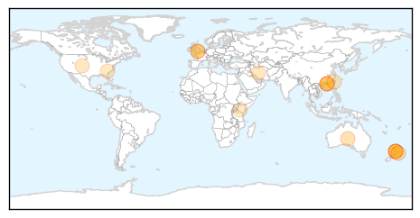
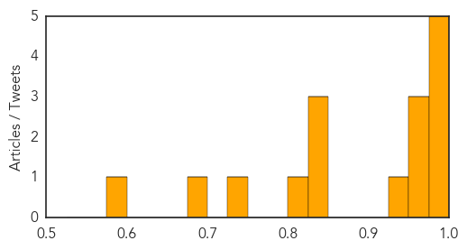

Influenza
30-Day Web Trend
0 alerts, 0 warnings

30-Day Twitter Trend
0 alerts, 0 warnings

Article Locations
Article Confidences

Top Articles:
- 0.996
- Waikato DHB call for influenza vaccinations
- 0.994
- Flu season declared in the Waikato
- 0.992
- Kiwis urged to vaccinate as flu runs rampant
- 0.978
- Flu-like illness doubled in Hawke’s Bay
- 0.936
- UK Avian Flu Case Confirmed as H7N7
- 0.924
- Record numbers of influenza cases: Ley
- 0.891
- S Korea travel alert for HK unreasonable, say health experts
- 0.881
- South Korea issues travel alert on Hong Kong after flu outbreak
- 0.881
- South Korea issues travel alert on Hong Kong after flu outbreak
- 0.863
- Highly pathogenic H7N7 bird flu confirmed at Lancashire farm
- 0.794
- Diverse avian flu strains hit UK, Taiwan, South Africa
- 0.751
- July 13, 2015 Archives
- 0.751
- July 12, 2015 Archives
- 0.716
- Dog owners in S.C. should be on the lookout for canine influenza
- 0.643
- The Vaccine Safety Double Standard
Top Tweets:
-
No tweets found for Jul 13, 2015
Cholera
30-Day Web Trend
0 alerts, 0 warnings

30-Day Twitter Trend
3 alerts, 0 warnings

Article Locations

Article Confidences
Top Articles:
- 0.999
- South Sudan: Cholera treatment centre opened in Juba
- 0.999
- Mdecins Sans Frontires opens cholera treatment center in Juba
- 0.999
- What Is Cholera? What Causes Cholera?
- 0.999
- Médecins Sans Frontières opens cholera treatment center in Juba
- 0.993
- No vaccination during Godavari Pushkarams
- 0.975
- School experts comment on first real-life trial of successful oral cholera vaccine
- 0.969
- We now have a cheap and effective cholera vaccine
- 0.961
- Rising Water Price in S. Sudan Compounds Cholera Outbreak
- 0.934
- A city exposed: Oxfam Media Brief July 2015 - South Sudan
- 0.846
- Sudan raises alert level to prevent cholera transmission from S. Sudan - Xinhua
- 0.843
- Sudan raises alert level to prevent cholera transmission from S. Sudan
- 0.837
- Cholera cases increasing in South Sudan as the cost of clean water skyrockets
- 0.818
- Cholera cases multiply as cost of clean water skyrockets in South Sudan capital: Oxfam
- 0.732
- Five of the most devastating pollution disasters in South Africa’s history
- 0.678
- How mobile phones are saving lives in Ghana
- 0.592
- South Sudan: UN Mission deplores killing of civilian in Organization compound
Top Tweets:
- 0.619
- RT: Read "What does a cholera outbreak look like?" @STOPCholera @IVIHeadquarters http://t.co/RZ8VMJWpps